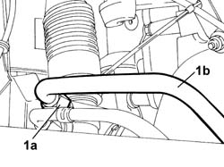
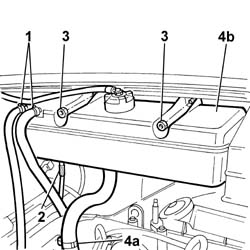
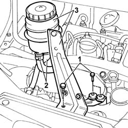

4130B42 RETURN PIPE FROM POWER STEERING CASE TO POWER STEERING FLUID RESEVIOR R R
- Path
- Procedures > 41 STEERING UNIT > 4130 POWER STEERING > 4130B POWER STEERING HYDRAULIC SYTEM > 4130B42 RETURN PIPE FROM POWER STEERING CASE TO POWER STEERING FLUID RESEVIOR R R
- Kind
- repair procedure (removal / refitting; the operation number is the code)
- Applies to
- all engines; all production periods
- Interactive page
- https://sloeber94.github.io/elrnDB-fDct/en/#/244001175
Applies to: all engines; all production periods
 Removing
Removing
 Refitting
Refitting- Position the vehicle on the lift.
Op. 7055B54 UNDER-ENGINE GUARD - R R
- Position a suitable container under the power assisted steering box to collect the fluid.
1. Undo the connector (1a) and disconnect the return pipe (1b) from the power assisted steering box.
- Release the pipe from the retaining springs on the power assisted steering box.

Applies to: all engines; all production periods
- Release the flexible section of the pipe from the lower retaining bands along the bodyshell.
- Lower the lift.
1. Disconnect the bands retaining the coolant pipe to the cylinder head and the radiator.
2. Remove the electrical connection from its seat on the reservoir.
3. Undo the nuts fixing the expansion tank.
4. Disconnect pipe (4a) carrying fluid to the coolant pump and remove expansion tank (4b).

Applies to: all engines; all production periods
1. Undo the bolts securing the power steering fluid reservoir bracket.
2. Disconnect the fluid pipes from the reservoir.
3. Remove the power assisted steering fluid reservoir complete with bracket.

Applies to: all engines; all production periods
- Raise the lift.
- Remove the complete return assembly from the lower part of the vehicle.
Applies to: all engines; all production periods
Refitting
Removing- Fit the return pipe from the power assisted steering box to the reservoir via the lower part of the vehicle.
- Lower the vehicle.
- Fit the power assisted steering fluid reservoir and connect the two pipes to it.
- Tighten the bolts fixing the mounting bracket to the crossmember.
- Fit the engine cooling reservoir and tighten the retaining nuts.
- Connect the hose to the rigid section of the coolant inlet pipe to the reservoir.
- Connect both recirculation pipes leading from the cylinder head and from the radiator to the reservoir.
- Raise the lift and secure the return pipe to the bands on the side panel.
- Tighten the connector to the power assisted steering box.
 | Value - daNm | Fastening | Component | Ø |
|---|---|---|---|---|
. | 6,3 | Nut | RETURN PIPE TO POWER STEERING RESERVOIR | M18 |
Op. 0010T21 COOLANT CHECK DENSITY AND TOP UP IF NECESSARY
Op. 0010T70 POWER ASSISTED STEERING FLUID - REPLACE
Op. 7055B54 UNDER-ENGINE GUARD - R R
- Remove the vehicle from the lift.